VPP学习
Table of Contents
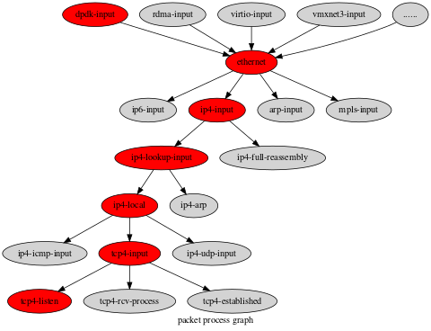
1. VPP初始化
1.1. 简介
VPP(Vector Packet Processing), VPP是由思科开源的一个可扩展的框架，可提供开箱即用的生产质量交换机/路由器功能， 是一种高性能的数据包处理堆栈，可以在普通CPU上运行。
1.2. 编译
1.2.1. 克隆项目
项目地址: https://gerrit.fd.io/r/vpp
$ git clone "https://gerrit.fd.io/r/vpp"
1.2.2. 编译
# if vpp<08.10 $ make install-dep $ make bootstrap $ make build # or `make build-release` # vpp 08.10+ (cmake) $ make install-dep $ make install-ext-deps $ make build # or `make build-release`
编译debug版本, 使用命令: make build, realease: make build.
1.2.3. 单独编译插件
$ cd my-plugin
$ mkdir _build
$ cd _build
$ cmake -GNinja -DCMAKE_INSTALL_PREFIX:PATH=/path/to/vpp/build-root/install-vpp-native/vpp ../
$ ninja
如果系统中安装了vpp-dev包，DCMAKE_INSTALL_PREFIX变量可以不用设置。
1.3. 运行
编译后的程序目录: debug: /path/to/vpp/build-root/install-vpp_debug-native/vpp/bin/vpp release: /path/to/vpp/build-root/install-vpp-native/vpp/bin/vpp
配置文件目录: /path/to/vpp/src/vpp/conf/startup.conf 注意: 在 unix 和 api-segment 配置块中, 需要修改 gid 的配置. 或者单独创建vpp组.
$ sudo /path/to/vpp/build-root/install-vpp_debug-native/vpp/bin/vpp -c /path/to/vpp/src/vpp/conf/startup.conf
打开cli
$ sudo /path/to/vpp/build-root/install-vpp_debug-native/vpp/bin/vppctl $ ? # 列出命令列表
1.4. 提交补丁
- 注册账号 首先需要注册 linux foundation 账号, https://linuxfoundation.org/
- 添加证书 然后在 vpp gerrit项目平台的设置中添加自己的证书, https://gerrit.fd.io/r/settings/
配置ssh 在家目录的
.ssh目录中的config(没有的话手动创建)中配置以下内容Host gerrit.fd.io User username # 配置用户名 Port 29418 Hostname gerrit.fd.io PreferredAuthentications publickey IdentityFile ~/.ssh/id_rsa # 配置上面添加的证书 ForwardX11 noclone项目
注意替换以下内容中的
xxxxxx为自己的用户名.$ git clone "ssh://xxxxxx@gerrit.fd.io:29418/vpp" && scp -p -P 29418 xxxxxx@gerrit.fd.io:hooks/commit-msg "vpp/.git/hooks/"
或者直接打开以下链接, 复制页面中的 命令行. https://gerrit.fd.io/r/admin/repos/vpp
提交格式 提交补丁使用以下命令.
$ git commit -s
模块: 间要说明 详细说明, 可以省略 Type: fix
注意: Type 中的字段可以为
feature fix refactor improvement style docs test make中的任意一个值, 并且必须填写.也可以执行
git log, 参照着来写.代码review 需要预先安装
git-review$ sudo apt install git-review
执行提交
$ git review
查看 dashboard
在链接 https://gerrit.fd.io/r/dashboard/self 中查看提交的补丁状态, 并指定 reviewer 人员.
2. 注册结构汇总
2.1. NODE
2.1.1. node 的类型
typedef enum { /* An internal node on the call graph (could be output). */ VLIB_NODE_TYPE_INTERNAL, /* Nodes which input data into the processing graph. Input nodes are called for each iteration of main loop. */ VLIB_NODE_TYPE_INPUT, /* Nodes to be called before all input nodes. Used, for example, to clean out driver TX rings before processing input. */ VLIB_NODE_TYPE_PRE_INPUT, /* "Process" nodes which can be suspended and later resumed. */ VLIB_NODE_TYPE_PROCESS, VLIB_N_NODE_TYPE, } vlib_node_type_t;
2.1.2. node的定义
2.1.2.1. VLIB_REGISTER_NODE
node 的注册，使用gcc的 __attribute__((__constructor__)) 构造属性，在main函数之前进行注册。
#define VLIB_REGISTER_NODE(x, ...) \ __VA_ARGS__ vlib_node_registration_t x; \ static void __vlib_add_node_registration_##x(void) \ __attribute__((__constructor__)); \ static void __vlib_add_node_registration_##x(void) \ { \ vlib_main_t *vm = vlib_get_main(); \ x.next_registration = vm->node_main.node_registrations; \ vm->node_main.node_registrations = &x; \ } \ static void __vlib_rm_node_registration_##x(void) \ __attribute__((__destructor__)); \ static void __vlib_rm_node_registration_##x(void) \ { \ vlib_main_t *vm = vlib_get_main(); \ VLIB_REMOVE_FROM_LINKED_LIST(vm->node_main.node_registrations, \ &x, next_registration); \ } \ __VA_ARGS__ vlib_node_registration_t x VLIB_REGISTER_NODE(dpdk_input_node) = { .type = VLIB_NODE_TYPE_INPUT, .name = "dpdk-input", .sibling_of = "device-input", .flags = VLIB_NODE_FLAG_TRACE_SUPPORTED, /* Will be enabled if/when hardware is detected. */ .state = VLIB_NODE_STATE_DISABLED, .format_buffer = format_ethernet_header_with_length, .format_trace = format_dpdk_rx_trace, .n_errors = DPDK_N_ERROR, .error_strings = dpdk_error_strings, } /* 宏定义展开后 (dpdk-input-node) */ /* dpdk_input_node 变量声明 */ vlib_node_registration_t dpdk_input_node; /* 函数声明：注册dpdk_input_node， 利用gcc的构造属性，使其先于main函数执行 */ static void __vlib_add_node_registration_dpdk_input_node(void) __attribute__((__constructor__)); /* 函数定义 */ static void __vlib_add_node_registration_dpdk_input_node(void) { vlib_main_t *vm = vlib_get_main(); /* 利用 node 结构的 next_registration 将所有node串成一个链表 */ dpdk_input_node.next_registration = vm->node_main.node_registrations; vm->node_main.node_registrations = &dpdk_input_node; } /* 函数声明： 从vlib_main_t 结构的链表中移除该node， 在main函数运行后调用(析构函数) */ static void __vlib_rm_node_registration_dpdk_input_node(void) __attribute__((__destructor__)); /* 函数定义 */ static void __vlib_rm_node_registration_dpdk_input_node(void) { vlib_main_t *vm = vlib_get_main(); VLIB_REMOVE_FROM_LINKED_LIST(vm->node_main.node_registrations, &dpdk_input_node, next_registration); } /* node的定义 */ vlib_node_registration_t dpdk_input_node = { .type = VLIB_NODE_TYPE_INPUT, .name = "dpdk-input", .sibling_of = "device-input", .flags = VLIB_NODE_FLAG_TRACE_SUPPORTED, /* Will be enabled if/when hardware is detected. */ .state = VLIB_NODE_STATE_DISABLED, .format_buffer = format_ethernet_header_with_length, .format_trace = format_dpdk_rx_trace, .n_errors = DPDK_N_ERROR, .error_strings = dpdk_error_strings, }
- 利用 VLIB_REGISTER_NODE(x,…) 定义好node后，会生成 static void \__vlib_add_node_registration_nodename(void){…} 之类的初始化函数，此类函数使用 __attribute__ ((constructor)) 属性修饰(构造函数)， 会在main函数执行之前被调用。
- 函数的功能是利用自身的 next_registration 成员以及 vlib_mains[n]->node_main.node_registrations 将所有node串成一个链表。
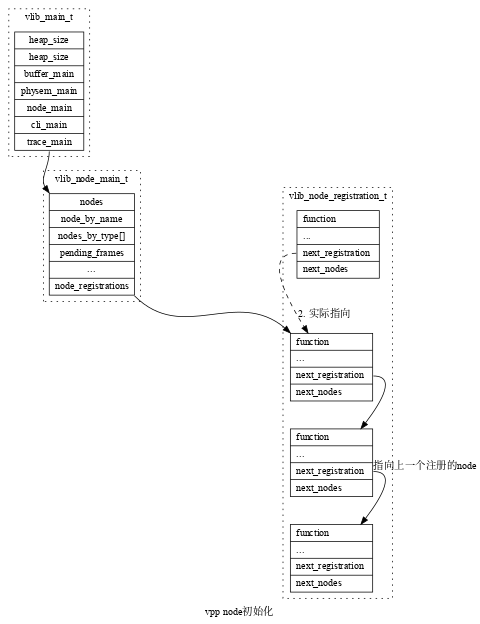
2.1.2.2. VLIB_NODE_FN
VLIB_NODE_FN用于定义 vlib_node_registration_t 结构中的 function（node的处理函数） 成员。
注意：如果使用VLIB_NODE_FN定义node的function时， 定义node时的function成员必须为NULL。
#define VLIB_NODE_FN(node) \ uword CLIB_MARCH_SFX(node##_fn)(); \ static vlib_node_fn_registration_t CLIB_MARCH_SFX( \ node##_fn_registration) = { \ .function = &CLIB_MARCH_SFX(node##_fn), \ }; \ \ static void __clib_constructor CLIB_MARCH_SFX( \ node##_multiarch_register)(void) \ { \ extern vlib_node_registration_t node; \ vlib_node_fn_registration_t *r; \ r = &CLIB_MARCH_SFX(node##_fn_registration); \ r->priority = CLIB_MARCH_FN_PRIORITY(); \ r->name = CLIB_MARCH_VARIANT_STR; \ r->next_registration = node.node_fn_registrations; \ node.node_fn_registrations = r; \ } \ uword CLIB_CPU_OPTIMIZED CLIB_MARCH_SFX(node##_fn) VLIB_NODE_FN(dpdk_input_node) (vlib_main_t *vm, vlib_node_runtime_t *node, vlib_frame_t *f) {......} /* 宏定义展开 */ uword dpdk_input_node_fn(); static vlib_node_fn_registration_t dpdk_input_node_fn_registration = { .function = &dpdk_input_node_fn, }; static void __clib_constructor dpdk_input_node_multiarch_register(void) { /* 在使用VLIB_NODE_FN注册function时， node中的function成员必须为NULL, 在调用register_node时, 先检查是否初始化了node中的node_fn_registrations 成员(使用VLIB_NODE_FN宏定义注册) */ extern vlib_node_registration_t node; vlib_node_fn_registration_t *r; r = &dpdk_input_node_fn_registration; r->priority = 0; r->name = "default"; r->next_registration = node.node_fn_registrations; node.node_fn_registrations = r; } uword dpdk_input_node_fn(vlib_main_t *vm, vlib_node_runtime_t *node, vlib_frame_t *f) {......}
2.1.3. node的注册
使用函数 register_node() 函数对node进行注册.
函数 register_node() 的调用顺序：
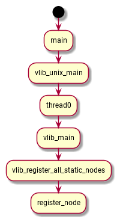
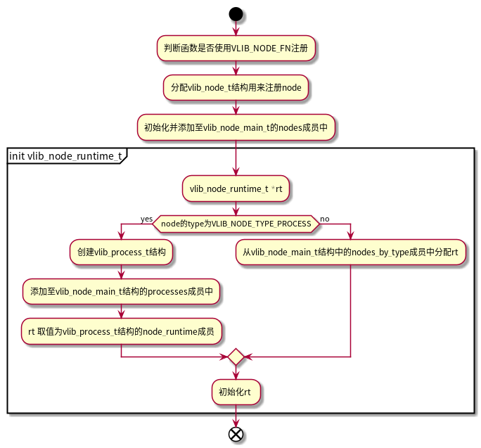
vlib数据包处理应用程序总是定义一组图节点来处理数据包。
一个通常通过VLIB_REGISTER_NODE宏来构造vlib_node_registration_t。在运行时，框架将此类注册集处理为有向图。在运行时将节点添加到图很容易。该框架不支持删除节点。
vlib提供了几种类型的矢量处理图节点，主要用于控制框架的调度行为。
- vlib_node_registration_t的类型成员的功能如下:
- VLIB_NODE_TYPE_PRE_INPUT-在所有其他节点类型之前运行
- VLIB_NODE_TYPE_INPUT-在pre_input节点之后尽可能频繁地运行
- VLIB_NODE_TYPE_INTERNAL-仅在通过添加待处理帧后显示的使其可运行
- VLIB_NODE_TYPE_PROCESS-仅在明确使其可运行时。“进程”节点实际上是协作的多任务线程。他们 必须在相当短的时间内明确暂停。
为了更好地理解图节点调度程序，请阅读./src/vlib/main.c:vlib_main_loop。
2.2. node初始化
vlib_node_main_init - sibling关联 1. 获取sibling_of标识的node, 2. 将本node index保存至同级node(属于同一个sibling_of)的sibling_bitmap中 3. 将同级node的index保存至本node的sibling_bitmap中 4. 将本node 和 所属 sibling_of的node互相关联 - node和next_node的关联 1. 将next_node_names 名称解析为索引, 保存至 vlib_node_t 中的 next_nodes成员中 - next_node和上一级的关联 1. 将node的索引保存至next_node的prev_node_bitmap中
2.3. MAIN_LOOP注册
VLIB_MAIN_LOOP_ENTER_FUNCTION(start_workers);
VLIB_MAIN_LOOP_ENTER_FUNCTION(ip4_main_loop_enter);
VLIB_MAIN_LOOP_ENTER_FUNCTION(ip6_main_loop_enter);
VLIB_MAIN_LOOP_ENTER_FUNCTION(session_main_loop_init);
vlib_node_registration_t node;
利用 node->node_fn_registrations; 来串接node的注册;
2.4. INIT_FUNCTION注册
VLIB_INIT_FUNCTION
2.5. PLUGIN注册
typedef CLIB_PACKED(struct { u8 default_disabled; const char version[32]; const char version_required[32]; const char overrides[256]; const char *early_init; const char *description; }) vlib_plugin_registration_t; #define VLIB_PLUGIN_REGISTER() \ vlib_plugin_registration_t vlib_plugin_registration \ CLIB_NOSANITIZE_PLUGIN_REG_SECTION \ __clib_export __clib_section(".vlib_plugin_registration")
2.6. THREAD注册
#define VLIB_REGISTER_THREAD(x,...) \ __VA_ARGS__ vlib_thread_registration_t x; \ static void __vlib_add_thread_registration_##x (void) \ __attribute__((__constructor__)) ; \ static void __vlib_add_thread_registration_##x (void) \ { \ vlib_thread_main_t * tm = &vlib_thread_main; \ x.next = tm->next; \ tm->next = &x; \ } \ static void __vlib_rm_thread_registration_##x (void) \ __attribute__((__destructor__)) ; \ static void __vlib_rm_thread_registration_##x (void) \ { \ vlib_thread_main_t * tm = &vlib_thread_main; \ VLIB_REMOVE_FROM_LINKED_LIST (tm->next, &x, next); \ } \ __VA_ARGS__ vlib_thread_registration_t x VLIB_REGISTER_THREAD (worker_thread_reg, static) = { .name = "workers", .short_name = "wk", .function = vlib_worker_thread_fn, }; /* 宏定义展开 */ vlib_thread_registration_t worker_thread_reg; static void __vlib_add_thread_registration_worker_thread_reg (void) __attribute__((__constructor__)); static void __vlib_add_thread_registration_worker_thread_reg (void) { vlib_thread_main_t *tm = &vlib_thread_main; worker_thread_reg.next = tm->next; tm->next = &worker_thread_reg; } static void __vlib_rm_thread_registration_worker_thread_reg (void) __attribute__((__constructor__)); static void __vlib_rm_thread_registration_worker_thread_reg (void) { vlib_thread_main_t *tm = &vlib_thread_main; VLIB_REMOVE_FROM_LINKED_LIST (tm->next, &worker_thread_reg, next); } vlib_thread_registration_t worker_thread_reg;
2.7. SIBILIND
- device-input
- ethernet-input
- nat-default
- ip6-rewrite
- ip4-rewrite
- ip4-input
- ip6-input
- ip6-local
- ip4-local
- ip4-drop
- ip6-drop
- l2-output-feat-arc
- l2-input-feat-arc
- mpls-lookup
- ip4-lookup
- ip6-lookup
- mpls-load-balance
- adj-midchain-tx
- mpls-output
- esp6-decrypt-tun
- esp4-decrypt-tun
- esp6-decrypt
- esp4-decrypt
3. VPP基础库
3.1. Vectors
vppinfra中的vectors是一个动态数组，由用户定义headers。vppinfra中的很多数据结构（hash、heap、pool）都是使用vector，其中header各不相同。
User header (optional, uword aligned) Alignment padding (if needed) Vector length in elements User's pointer -> Vector element 0 Vector element 1 ... Vector element N-1
如上面所示，vector API从第0个元素开始处理， 空指针是一个有效的0长度的vector。
为避免内存分配器的抖动，通常重置vector的长度以保留内存分配。通过宏定义 vec_reset_length(v) 来重置vector的长度字段。
通常情况下 user header是不存在的。 User headers允许在vppinfra vector之上构建其他的数据结构。可以通过 [vec]()*_aligned 系列的宏来指定vector首个数据元素的对齐。
Vector 元素可以是任意的c语言类型，在vector之上构建的数据结构（heap、pool等）也是如此。许多宏的 _a 变体支持vector元素的对齐， _h 变体支持非零长度的vector header， _ha 则都支持。此外可以在vector 元素结构中使用 [CLIB_CACHE_LINE_ALIGN_MARK]() 宏来指定缓存行对齐。
对header 和 对齐 相关宏的用法不一致，会导致延迟混乱的故障。
常见的编程错误： 存储一个变量指向vector元素的指针，然后扩展vector，扩展后，原始的元素内存位置可能已经变换，此时使用原先的指针可能会导致非法引用，正确的方法是记住vector的索引，vector的索引总是保持不变的。
由于调试时不能调用宏，因此提供一些函数以供调试使用：
- vl(v) 打印 vec_len(v)
- pe(p) 打印 pool_elts(p)
- pifi(p, index) 打印 pool_is_free_index(p, index)
- debug_hex_bytes(p, nbytes) 从p开始已十六进制输出nbytes长度内存。
使用 “show gdb” cli调试命令来打印当前集合。
3.2. Bitmaps
位图，使用vppinfra vector构建。
3.3. Pools
结合vectors和bitmaps，可以快速的分配及释放具有独立生存周期的固定大小的数据结构，pools很适合私有会话数据结构的分配。
3.4. Hashes
vppinfra提供了hash表的几种规格，数据平面的报文分类和会话查找经常使用hansh表。
bihash_16_8.h bihash_16_8_32.h bihash_24_16.h bihash_24_8.h bihash_32_8.h bihash_40_8.h bihash_48_8.h bihash_8_16.h bihash_8_8.h
3.4.1. 数据结构
初始化参数
3.5. Timekeeping
3.6. 时间轮Timer Wheel
3.6.1. 介绍
定义时间轮参数的宏
/* 时间轮的轮数量 */ #define TW_TIMER_WHEELS 1 /* 每个时间轮的槽数量 */ #define TW_SLOTS_PER_RING 2048 /* 时间轮槽数数值对应的位移*/ #define TW_RING_SHIFT 11 /* 时间轮槽数的掩码 */ #define TW_RING_MASK (TW_SLOTS_PER_RING -1) /* */ #define TW_TIMERS_PER_OBJECT 2 #define LOG2_TW_TIMERS_PER_OBJECT 1 /* 使用模板定义的函数后缀， 用以区分不同参数定义的时间轮函数 */ #define TW_SUFFIX _2t_1w_2048sl #define TW_FAST_WHEEL_BITMAP 0 #define TW_TIMER_ALLOW_DUPLICATE_STOP 0
时间轮结构、函数介绍
typedef enum { /** Fast timer ring ID */ TW_TIMER_RING_FAST, /** Slow timer ring ID */ TW_TIMER_RING_SLOW, /** Glacier ring ID */ TW_TIMER_RING_GLACIER, } tw_ring_index_t; typedef struct { /** Timer pool */ TWT (tw_timer) * timers; /** Next time the wheel should run */ f64 next_run_time; /** Last time the wheel ran */ f64 last_run_time; /** 每秒钟的timer滴答数 */ f64 ticks_per_second; /** Timer interval, also needed to avoid fp divide in speed path */ f64 timer_interval; /** current tick */ u64 current_tick; /** 当前的时间轮的位置标识 */ u32 current_index[TW_TIMER_WHEELS]; /** 每个时间轮的槽位数组 */ tw_timer_wheel_slot_t w[TW_TIMER_WHEELS][TW_SLOTS_PER_RING]; #if TW_OVERFLOW_VECTOR > 0 tw_timer_wheel_slot_t overflow; #endif #if TW_FAST_WHEEL_BITMAP > 0 /** Fast wheel slot occupancy bitmap */ uword *fast_slot_bitmap; #endif /** expired timer callback, receives a vector of handles */ void (*expired_timer_callback) (u32 * expired_timer_handles); /** 处理过期timer时,用于存储timer handle的向量 */ u32 *expired_timer_handles; /** 过期的最大数量 */ u32 max_expirations; } TWT (tw_timer_wheel); /* 启动一个timer的宏定义 */ u32 TW (tw_timer_start) (TWT (tw_timer_wheel) * tw, u32 pool_index, u32 timer_id, u64 interval); /* 停止一个timer的宏定义 */ void TW (tw_timer_stop) (TWT (tw_timer_wheel) * tw, u32 handle); int TW (tw_timer_handle_is_free) (TWT (tw_timer_wheel) * tw, u32 handle); /* 更新时间戳的宏定义 */ void TW (tw_timer_update) (TWT (tw_timer_wheel) * tw, u32 handle, u64 interval); /* 初始化时间轮实例 */ void TW (tw_timer_wheel_init) (TWT (tw_timer_wheel) * tw, void *expired_timer_callback, f64 timer_interval, u32 max_expirations); /* 释放时间轮实例 */ void TW (tw_timer_wheel_free) (TWT (tw_timer_wheel) * tw); /* 从时间轮中取出过期的timer */ u32 *TW (tw_timer_expire_timers) (TWT (tw_timer_wheel) * tw, f64 now); u32 *TW (tw_timer_expire_timers_vec) (TWT (tw_timer_wheel) * tw, f64 now, u32 * vec);
3.6.2. 原理说明
tw_timer_wheel_init初始化的过程大致如下图：
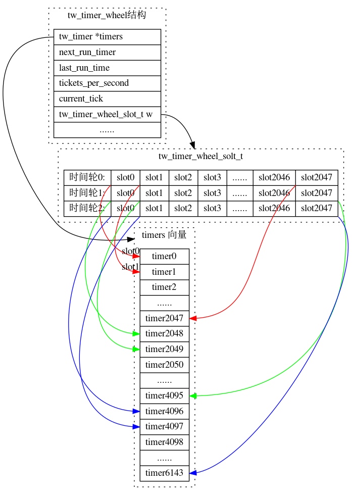
- 时间轮的轮数由宏
TW_TIMER_WHEELS来指定， 最大为3轮。 - slot槽的数量由宏
TW_SLOTS_PER_RING指定。 - slot槽中保存tw_timer结构的handle。用于索引timer结构。tw_timer结构全部从tw_timer_wheel结构的timers向量中申请。
- 时间轮0（TW_TIMER_RING_FAST）中的slot之间的间隔时间由函数
tw_timer_wheel_init的参数timer_interval_in_seconds提供。 - 时间轮1（TW_TIMER_RING_SLOW）中的slot的时间间隔为时间轮0的slot间隔乘slot数量。
- 时间轮2（TW_TIMER_RING_GLACIER）中的slot的时间间隔为时间轮1的slot间隔乘slot数量。
tw_timer_start添加timer过程：
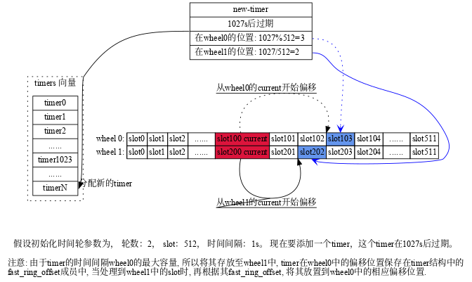
tw_timer_expire_timers处理过期timer的过程:
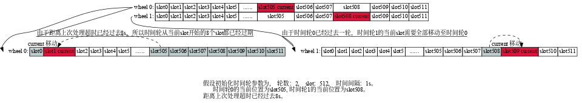
3.6.3. 初始化宏
3.6.4. 用法
tw_timer_16t_1w_2048sl.c tw_timer_16t_1w_2048sl.h tw_timer_16t_2w_512sl.c tw_timer_16t_2w_512sl.h tw_timer_1t_3w_1024sl_ov.c tw_timer_1t_3w_1024sl_ov.h tw_timer_2t_1w_2048sl.c tw_timer_2t_1w_2048sl.h tw_timer_2t_2w_512sl.c tw_timer_2t_2w_512sl.h tw_timer_4t_3w_256sl.c tw_timer_4t_3w_256sl.h tw_timer_4t_3w_4sl_ov.c tw_timer_4t_3w_4sl_ov.h
3.7. 单向共享内存队列 svm queue
3.7.1. 数据结构
typedef struct _svm_queue { pthread_mutex_t mutex; /* 8 bytes */ pthread_cond_t condvar; /* 8 bytes */ int head; int tail; volatile int cursize; int maxsize; int elsize; int consumer_pid; int producer_evtfd; int consumer_evtfd; char data[0]; } svm_queue_t;
3.7.2. 接口
- 分配并初始化svm queue
参数 描述 nels queue中的元素数量 elsize queue中的元素大小， 一般为4或calineline-size pid 队列消费者的pid return 新初始化的svn queue 在调用此函数前，先将堆切换为svm数据堆。
svm_queue_t *svm_queue_alloc_and_init (int nels, int elsize,int consumer_pid);
- 等待队列事件
在获取到q->mutex的前提下调用。
void svm_queue_wait (svm_queue_t * q);
- 等待队列事件，并设置超时
在获取到q->mutex的前提下调用。
int svm_queue_timedwait (svm_queue_t * q, double timeout);
- 向队列添加元素
void svm_queue_add_raw (svm_queue_t * q, u8 * elem);
- 设置生产者event fd
当生产者产生事件时，会向fd中写入1。
生产者event fd被设置后，将不再使用队列的condvars字段来通知事件。
void svm_queue_set_producer_event_fd (svm_queue_t * q, int fd);
- 设置消费者event fd
当消费者要生成一个事件时，向这个fd中写入1。
虽然实际上，生产者和消费者的fd都指向同一个底层文件描述符，但由于是两个不同进程，其文件描述符表不同。调用者需要确保两个对等点之间正确的交换两个文件描述符。
void svm_queue_set_consumer_event_fd (svm_queue_t * q, int fd);
3.7.3. 内存结构
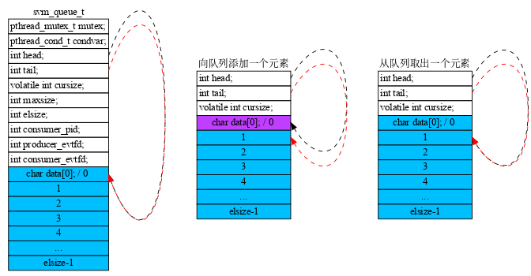
4. 插件
4.1. 插件列表
| Plugin | Description |
|---|---|
1. ioam_plugin.so |
Inbound Operations, Administration, and Maintenance (OAM) |
2. perfmon_plugin.so |
Performance Monitor |
3. urpf_plugin.so |
Unicast Reverse Path Forwarding (uRPF) |
4. tlspicotls_plugin.so |
Transport Layer Security (TLS) Engine, Picotls Based |
5. l3xc_plugin.so |
L3 Cross-Connect (L3XC) |
6. mdata_plugin.so |
Buffer metadata change tracker. |
7. ping_plugin.so |
Ping (ping) |
8. avf_plugin.so |
Intel Adaptive Virtual Function (AVF) Device Driver |
9. pppoe_plugin.so |
PPP over Ethernet (PPPoE) |
10. crypto_native_plugin.so |
Intel IA32 Software Crypto Engine |
11. srv6am_plugin.so |
Masquerading Segment Routing for IPv6 (SRv6) Proxy |
12. l2e_plugin.so |
Layer 2 (L2) Emulation |
13. dpdk_plugin.so |
Data Plane Development Kit (DPDK) |
14. acl_plugin.so |
Access Control Lists (ACL) |
15. crypto_openssl_plugin.so |
OpenSSL Crypto Engine |
16. dslite_plugin.so |
Dual-Stack Lite |
17. tlsmbedtls_plugin.so |
Transport Layer Security (TLS) Engine, Mbedtls Based |
18. ikev2_plugin.so |
Internet Key Exchange (IKEv2) Protocol |
19. svs_plugin.so |
Source Virtual Routing and Fowarding (VRF) Select |
20. vrrp_plugin.so |
VRRP v3 (RFC 5798) |
21. hs_apps_plugin.so |
Host Stack Applications |
22. nsim_plugin.so |
Network Delay Simulator |
23. dns_plugin.so |
Simple DNS name resolver |
24. dhcp_plugin.so |
Dynamic Host Configuration Protocol (DHCP) |
25. rdma_plugin.so |
RDMA IBverbs Device Driver |
26. gbp_plugin.so |
Group Based Policy (GBP) |
27. igmp_plugin.so |
Internet Group Management Protocol (IGMP) |
28. nat_plugin.so |
Network Address Translation (NAT) |
29. memif_plugin.so |
Packet Memory Interface (memif) – Experimental |
30. crypto_ipsecmb_plugin.so |
Intel IPSEC Multi-buffer Crypto Engine |
31. nsh_plugin.so |
Network Service Header (NSH) |
32. abf_plugin.so |
Access Control List (ACL) Based Forwarding |
33. ila_plugin.so |
Identifier Locator Addressing (ILA) for IPv6 |
34. srv6mobile_plugin.so |
SRv6 GTP Endpoint Functions |
35. tlsopenssl_plugin.so |
Transport Layer Security (TLS) Engine, OpenSSL Based |
36. gtpu_plugin.so |
GPRS Tunnelling Protocol, User Data (GTPv1-U) |
37. map_plugin.so |
Mapping of Address and Port (MAP) |
38. stn_plugin.so |
VPP Steals the NIC (STN) for Container Integration |
39. builtinurl_plugin.so |
vpp built-in URL support |
40. http_static_plugin.so |
HTTP Static Server |
41. ct6_plugin.so |
IPv6 Connection Tracker |
42. cdp_plugin.so |
Cisco Discovery Protocol (CDP) |
43. lacp_plugin.so |
Link Aggregation Control Protocol (LACP) |
44. flowprobe_plugin.so |
Flow per Packet |
45. mactime_plugin.so |
Time-based MAC Source Address Filter |
46. lb_plugin.so |
Load Balancer (LB) |
47. srv6as_plugin.so |
Static Segment Routing for IPv6 (SRv6) Proxy |
48. srv6ad_plugin.so |
Dynamic Segment Routing for IPv6 (SRv6) Proxy |
49. vmxnet3_plugin.so |
VMWare Vmxnet3 Device Driver |
5. COMMAND
5.1. command注册
#define VLIB_CLI_COMMAND(x, ...) \ __VA_ARGS__ vlib_cli_command_t x; \ static void __vlib_cli_command_registration_##x(void) \ __attribute__((__constructor__)); \ static void __vlib_cli_command_registration_##x(void) \ { \ vlib_main_t *vm = vlib_get_main(); \ vlib_cli_main_t *cm = &vm->cli_main; \ x.next_cli_command = cm->cli_command_registrations; \ cm->cli_command_registrations = &x; \ } \ static void __vlib_cli_command_unregistration_##x(void) \ __attribute__((__destructor__)); \ static void __vlib_cli_command_unregistration_##x(void) \ { \ vlib_main_t *vm = vlib_get_main(); \ vlib_cli_main_t *cm = &vm->cli_main; \ VLIB_REMOVE_FROM_LINKED_LIST(cm->cli_command_registrations, \ &x, next_cli_command); \ } \ __VA_ARGS__ vlib_cli_command_t x
5.2. 宏定义
利用gcc attribute__((__constructor)) 属性进行构造初始化
VLIB_INIT_FUNCTION(dpdk_main_init) = { .runs_after = VLIB_INITS("dpdk_init"), }; VLIB_DECLARE_INIT_FUNCTION(x, tag) vlib_init_function_t *_VLIB_INIT_FUNCTION_SYMBOL(x, tag) = dpdk_main_init; static void __vlib_add_init_function_dpdk_main_init(void) __attribute__((__constructor__)); static _vlib_init_function_list_elt_t _vlib_init_function_init_dpdk_main_init; static void __vlib_add_init_function_dpdk_main_init(void) { vlib_main_t *vm = vlib_get_main(); _vlib_init_function_init_dpdk_main_init.next_init_function = vm->init_function_registrations; vm->init_function_registrations = &_vlib_init_function_init_dpdk_main_init; _vlib_init_function_init_dpdk_main_init.f = &dpdk_main_init; _vlib_init_function_init_dpdk_main_init.name = "dpdk_main_init"; } static void __vlib_rm_init_function_dpdk_main_init(void) __attribute__((__destructor__)); static void __vlib_rm_init_function_dpdk_main_init(void) { vlib_main_t *vm = vlib_get_main(); _vlib_init_function_list_elt_t *this, *prev; this = vm->init_function_registrations; if (this == 0) return; if (this->f == dpdk_main_init) { vm->init_function_registrations = this->next_init_function; return; } prev = this; this = this->next_init_function; while (this) { if (this->f == dpdk_main_init) { prev->next_init_function = this->next_init_function; return; } prev = this; this = this->next_init_function; } } static _vlib_init_function_list_elt_t _vlib_init_function_init_dpdk_main_init = { .runs_after = VLIB_INITS("dpdk_init"), };
VNET_FEATURE_INIT()
6. process调度(协程)
dispatch_process(); vlib_process_startup(); vlib_process_bootstrap();
7. dpdk逻辑梳理
7.1. dpdk_config配置初始化
首先，在 /home/fanyf/Workspace/Github/fdio/vpp/src/plugins/dpdk/device/init.c 文件中，注册了dpdk配置处理函数：
VLIB_CONFIG_FUNCTION (dpdk_config, "dpdk");
7.1.1. 配置项
- no-hugetlb
- 不使用大页
- telemetry
- enable-tcp-udp-checksum
- 开启udp tcp 校验和
- no-tx-checksum-offload
- 启用硬件计算校验和
- decimal-interface-names
- 十进制的接口名称
- no-multi-seg
- 设备不支持多segment发送
- num-mem-channels
- 内存通道
- num-crypto-mbufs
- uio-driver
- 使用的uio驱动
- no-pci
- 是否禁用pci设备
- blacklist
- 设备黑名单
- no-vmbus
- 禁用VM bus
- no-shconf
- 不共享配置 （mmap映射文件描述符）
- no-hpet
- 禁用HPET
- no-huge
- 使用malloc而非hugetlbfs
- vmware-tsc-map
- 使用vmware TSC map
- huge-dir
- 指定hugetlbfs目录
- proc-type
- 进程的类型 primary还是secoundary
- file-prefix
- hugetlbfs 文件前缀名
- vdev
- 虚拟设备 使用eal_option_device_add解析
- log-level
- 日至级别
- iova-mode
- iova模式 PA或者VA
- coremask, c
- cpu绑定
7.1.2. dev dpdk_device_config
根据设备类型插入对应的hash表 初始化设备参数 解析设备配置
- num-rx-queues
- rx队列
- num-tx-queues
- tx队列
- num-rx-desc
- rx ring大小
- num-tx-desc
- tx ring大小
- name
- 指定设备的名称
- workers
- 指定设备绑定的cpu
- rss
- rss hash分流
- vlan-strip-offload on/off
- 是否开启vlan剥离
- tso on/off
- 是否开启tso
- devargs
- 设备参数
- rss-queues
- 配置rss queue
7.1.3. rte_eal_init
在解析完参数后， 开始生成dpdk eal的参数， 之后调用rte_eal_init开始dpdk eal 的初始化。
7.1.4. buffer pool 初始化
dpdk_buffer_pools_create
分别注册“vpp”和“vpp-no-cache”的内存池结构
dpdk_buffer_pool_init
分别创建缓存mempool和非缓存mempool的buffer
调用rte_pktmbuf_pool_init初始化mempool (并初始化mempool中的私有数据)
分别计算mempool中每项的对象header
使用rte_pktmbuf_init来初始化mempool中的每个obj
拷贝buffer_templates
为物理设备进行DMA映射
7.2. dpdk_process协程
dpdk_lib_init
根据配置初始化tcpudp校验和标识
初始化线程数据的buffer_template.flag
初始化线程数据中的sw_if_index[VLIB_TX]
分别创建vnet interface，
初始化名称队列以及设备参数等等。
指定设备的处理线程
ethernet_register_interface
vnet_register_interface
创建网卡的tx-node和output-node （devname-tx devname-output ）
调用vlib_register_node注册tx-node 和 output_node
vnet_sw_interface_set_flags_helper 调用示例被创建时的up/down回调
ethernet_setup_node
vnet_sw_interface_set_mtu
ethernet_set_mac
设置接口设备的input-node（dpdk_input_node）
注册设备的rx_queue
dpdk_service_setup //使用dpdk的接口初始化设备，如果指定了启动参数，则将开启设备
vlan strip配置
dpdk_cryptodev_init
dpdk_update_link_state
循环，统计和更新链路状态
7.3. 数据包处理逻辑
device-input(例如 dpdk-input-node)之类的节点, next node 与device-input保持一致 分别为:
- ip4-input-no-checksum [0]
- ip4-input [1]
- ip6-input [2]
- mpls-input [3]
- ethernet-input [4]
- error-drop [5]
- dpdk_device_input
- ethernet_input
- ip4_input
- ip4_lookup
- ip4_local
- tcp4_input
- tcp4_listen
vlib_main_or_worker_loop
//调度执行 VLIB_NODE_TYPE_PRE_INPUT 类型的node
vec_foreach(,,nm->nodes_by_type[VLIB_NODE_TYPE_PRE_INPUT){dispatch_node}
//调度执行 VLIB_NODE_TYPE_INPUT 类型的node
vec_foreach(,,nm->nodes_by_type[VLIB_NODE_TYPE_INPUT){dispatch_node}
dpdk_device_input 在此位置被调用
//执行被input node 添加的 未决向量
for (i = 0; i < _vec_len (nm->pending_frames); i++)
cpu_time_now = dispatch_pending_node (vm, i, cpu_time_now);
7.4. 代码逻辑
7.4.1. 执行input node
在vlib_main_loop中, 调度 VLIB_NODE_TYPE_INPUT 类型的node时, dpdk-input-node会被调用.
7.4.1.1. dpdk-input-node
dpdk_device_input() rte_eth_rx_burst() dpdk_process_rx_burst() vlib_put_next_frame()
在执行完 vlib_put_next_frame 后, 会将ethernet-input-node 加入 vlib_node_main_t的 pending_frames中, 等待被执行.
7.4.1.2. ethernet-input-node
在 vlib_main_or_worker_loop 中, 会处理由 input node 添加的 pending vector, 通过调用 dispatch_pending_node() 函数来处理, ethernet-input-node由此被调用.
ethernet_input_node eth_input_single_int eth_input_process_frame vlib_buffer_enqueue_to_next
在 eth_input_process_frame 中,确定数据报类型, 假设为ipv4的报文, 选定ip4-input-node 或者 ip4-input-no-checksum-node 作为下一个node处理.
7.4.1.3. ip4-input-node
在ethernet-input-node处理完成后, ip4-input-node已经被添加至pending_frames 中, 下一次轮询直接被调用.
ip4_input_node_fn/ip4_inpu_no_checksum_node_fn ip4_input_inline ip4_input_set_next 设置next node为 IP4_INPUT_NEXT_LOOKUP vnet_feature_arc_start vlib_buffer_enqueue_to_next
7.4.1.4. ip4-lookup-node
ip4_lookup_inline ip4_fib_mtire_liikup_step_one ip4_fib_mtrie_lookup_step vlib_buffer_enqueue_to_next
通过查找转发信息库, 发现是到本机的报文, 选定ip-local-node为下一个node.
7.4.1.5. ip4-local-node
ip4_local_inline ip4_local_classify 分片报文选择IP_LOCAL_NEXT_REASSEMBLY为下一个node 否则直接根据四层协议选择相应的node(tcp4-input-node) ip4_local_set_next_and_error vlib_buffer_enqueue_to_next
7.4.1.6. tcp4-input-node
tcp46_input_inline tcp_input_lookup_buffer session_lookup_connection_wt4 查找established session 查找half-open connection 查找session rules table 查找listener session tcp_input_dispatch_buffer 根据查找到的连接句柄,从tcp状态转换表(tcp_dispatch_table_init)中选择下一个node vlib_buffer_enqueue_to_next
7.4.1.7. 执行逻辑
8. vnet梳理
8.1. 数据结构
8.1.1. vnet_hw_interface_t
typedef struct vnet_hw_interface_t { /* Interface name. */ u8 *name; /* flags: state/half duplex/full duplex... */ vnet_hw_interface_flags_t flags; /* 接口功能开关标识 */ vnet_hw_interface_capabilities_t caps; /* link speed in kbps */ u32 link_speed; /* vector类型的硬件地址 */ u8 *hw_address; /* 接口的tx-node索引和output-node索引 */ u32 output_node_index, tx_node_index; /* (dev_class, dev_instance) 唯一标识硬件接口 */ u32 dev_class_index; u32 dev_instance; /* (hw_class, hw_instance) 唯一标识硬件接口 */ u32 hw_class_index; u32 hw_instance; /* 本接口的hw索引 */ u32 hw_if_index; /* 本接口的sw索引 */ u32 sw_if_index; CLIB_CACHE_LINE_ALIGN_MARK (cacheline1); /* 在interface-output node中，本接口的下一个node 在vnet_per_buffer_interface_output()函数中使用 */ u32 output_node_next_index; /* 接口的最大传输速率 bits/sec. */ f64 max_rate_bits_per_sec; /* 接口支持的最小数据包大小 */ u32 min_supported_packet_bytes; /* 接口支持的最大数据包大小 */ u32 max_supported_packet_bytes; /* 配置的最小数据包大小 */ u32 min_packet_bytes; /* 配置的最大数据包大小 */ u32 max_packet_bytes; /* hash表，子接口到sw_if_index的映射 */ uword *sub_interface_sw_if_index_by_id; /* l2/l3的子接口数量*/ u32 l2_if_count; u32 l3_if_count; /* 接口的绑定信息 0 - 既不是绑定接口也不是slave ~0 - 绑定接口的slave others - 绑定接口，带有一个指向所有slave的bitmap指针 */ uword *bond_info; #define VNET_HW_INTERFACE_BOND_INFO_NONE ((uword *) 0) #define VNET_HW_INTERFACE_BOND_INFO_SLAVE ((uword *) ~0) /* input node 索引 */ u32 input_node_index; /* 每个queue的cpu索引 */ u32 *input_node_thread_index_by_queue; vnet_hw_if_rx_mode default_rx_mode; /* rx queues */ u32 *rx_queue_indices; /* numa node that hardware device connects to */ u8 numa_node; /* rss queues bitmap */ clib_bitmap_t *rss_queues; /* trace */ i32 n_trace; u32 trace_classify_table_index; } vnet_hw_interface_t;
8.1.2. vnet
9. 内存管理
9.1. main_heap初始化
9.1.1. 临时初始化内存
此处初始化的内存稍后调用 clib_mem_destroy() 初始化. 主要用来作为解析内存参数时的内存分配.
clib_mem_init >> clib_mem_init_internal 1. clib_mem_main_init 2. clib_mem_vm_map_internal clib_mem_vm_reserve 3. create_mspace_with_base 4. clib_mem_set_heap 1. 获取系统pagesize 在大页文件系统中创建匿名文件描述符(memfd_create). mmap映射一页空间, 使用move_pages测试系统numa-node数量 2. 预留系统启动初始化需要的内存 调用mmap预留内存(需要多预留一页内存, 用作管理内存的header(clib_mem_vm_map_hdr_t)) 设置内存属性 初始化内存header结构 3. 初始化用户堆内存管理结构 4. 设置默认分配的堆内存
9.1.2. main heap初始化
解析完内存参数后, 重新初始化默认的堆内存.
- 标记 main thread 运行的numa node
- 使用 main heap 作为其他numa node的堆内存
9.2. vlib内存库
vlib_physmem_init linux_vfio_init
9.3. buffer初始化
10. BinaryAPI
vpp提供了一种二进制API的方案,可以允许各种各样的客户端对数据平面进行编程.
通讯消息定义在 *.api的文件中, API的编译器位于 src/tools/vppapigen/ 目录下.
下面是一个示例, 文件位置: src/vnet/interface.api, 定义了典型的请求/响应消息格式:
/** \brief Set flags on the interface @param client_index - opaque cookie to identify the sender @param context - sender context, to match reply w/ request @param sw_if_index - index of the interface to set flags on @param flags - interface_status flags (only IF_STATUS_API_FLAG_ADMIN_UP used in config) */ autoreply define sw_interface_set_flags { u32 client_index; u32 context; vl_api_interface_index_t sw_if_index; vl_api_if_status_flags_t flags; };
在api编译器编译此文件后, 会在 build-root/install-vpp_debug-native/vpp/include/vnet/interface.api.h 文件中生成如下内容:
#ifdef vl_msg_id vl_msg_id(VL_API_SW_INTERFACE_SET_FLAGS, vl_api_sw_interface_set_flags_t_handler) vl_msg_id(VL_API_SW_INTERFACE_SET_FLAGS_REPLY, vl_api_sw_interface_set_flags_reply_t_handler) #endif #ifdef vl_msg_name vl_msg_name(vl_api_sw_interface_set_flags_t, 1) vl_msg_name(vl_api_sw_interface_set_flags_reply_t, 1) #endif #ifdef vl_msg_name_crc_list #define foreach_vl_msg_name_crc_interface \ _(VL_API_SW_INTERFACE_SET_FLAGS, sw_interface_set_flags, 6a2b491a) \ _(VL_API_SW_INTERFACE_SET_FLAGS_REPLY, sw_interface_set_flags_reply, e8d4e804) \ ; #endif #ifdef vl_typedefs typedef struct __attribute__ ((packed)) _vl_api_sw_interface_set_flags { u16 _vl_msg_id; u32 client_index; u32 context; vl_api_interface_index_t sw_if_index; vl_api_if_status_flags_t flags; } vl_api_sw_interface_set_flags_t; typedef struct __attribute__ ((packed)) _vl_api_sw_interface_set_flags_reply { u16 _vl_msg_id; u32 context; i32 retval; } vl_api_sw_interface_set_flags_reply_t; #endif
要更改接口的管理状态, 二进制api客户端会发送 vl_api_sw_interface_set_flags_t到vpp, vpp会以 vl_api_sw_interface_set_flags_reply_t的消息格式进行响应.
多层次的软件 传输类型 以及共享库实现了多种功能:
- API消息分配 跟踪 打印 重放
- 通过全局的共享内存 成对/专用的共享内存和套接字的消息传输
- 跨越非线程安全消息处理程序的工作线程的屏障同步
消息处理例程对于向vpp递送消息或者从vpp获取消息的传输方式不关心, 可以同时使用多种API消息的传输类型.
10.1. BAPI
10.1.1. 消息分配
二进制api消息总是顺序处理的, 当ring分配器可用时用它作为消息的分配器, 相对于传统的内存分配器来说,此方案非常快, 并且不会引起内存碎片. 参照 src/vlibmemory/memory_shared.c vl_api_msg_alloc_internal()
无论采用何种传输方式, 二进制api消息始终遵循 msgbuf_t 头部:
/** Message header structure */ typedef struct msgbuf_ { svm_queue_t *q; /**< message allocated in this shmem ring */ u32 data_len; /**< message length not including header */ u32 gc_mark_timestamp; /**< message garbage collector mark TS */ u8 data[0]; /**< actual message begins here */ } msgbuf_t;
void vl_msg_api_free (void *a) { api_main_t *am = vlibapi_get_main (); vl_msg_api_free_w_region (am->vlib_rp, a); { msgbuf_t *rv; void *oldheap; rv = (msgbuf_t *) (((u8 *) a) - offsetof (msgbuf_t, data)); /* * 由于只有一个例程/线程对消息缓冲区具有控制权. * 此处仅仅清除rv->q字段来释放缓冲区 */ if (rv->q) { rv->q = 0; rv->gc_mark_timestamp = 0; VL_MSG_API_POISON (rv->data); return; } /* <snip> */ } }
10.1.2. 消息跟踪和重放
vpp可以捕获和重放相当数量的二进制API trace, 涉及数十万的api事物的系统级别的问题可以在一秒内重新运行. 可以添加一些条件点在特定条件下触发.
有了二进制API的跟踪 重放 打印 系统级别的bug上报, 即使系统在经过300000次的api处理之后停止转发, 仍然可以可以离线分析定位问题.
10.1.3. 客户端连接细节
用c语言建立一个到VPP的二进制API连接:
int connect_to_vpe (char *name) { vat_main_t *vam = &vat_main; api_main_t *am = vlibapi_get_main (); if (vl_client_connect_to_vlib ("/vpe-api", name, 32) < 0) return -1; vam->vl_input_queue = am->shmem_hdr->vl_input_queue; vam->my_client_index = am->my_client_index; return 0; }
vpp在发送二进制API消息到客户端时不可以阻塞, vpp端的消息处理例程必须在短时间内完成, 在发送异步消息时, 尽可能积极的读取API的rx ring.
10.1.4. 二进制API消息接收线程
调用 vl_client_connect_to_vlib 将会启动一个二进制api消息接收线程.
static void * rx_thread_fn (void *arg) { rx_thread_fn_arg_t *a = (rx_thread_fn_arg_t *) arg; memory_client_main_t *mm; svm_queue_t *q; vlibapi_set_main (a->am); vlibapi_set_memory_client_main (a->mm); free (a); mm = vlibapi_get_memory_client_main (); q = vlibapi_get_main ()->vl_input_queue; /* So we can make the rx thread terminate cleanly */ if (setjmp (mm->rx_thread_jmpbuf) == 0) { mm->rx_thread_jmpbuf_valid = 1; clib_mem_set_thread_index (); while (1) vl_msg_api_queue_handler (q); } pthread_exit (0); }
要处理自己的二进制API消息队列, 请使用vl_client_connect_to_vlib_no_rx_pthread. vl_msg_api_queue_handler() 使用条件变量或者事件fd(eventfd)与vpp通信, 处理vpp->客户端的流量, 然后睡眠.当消息队列由空变为非空时, vpp使用条件变量广播此事件.
VPP以很高的速度检查二进制API消息输入队列. vpp依据数据平面包处理的要求, 以可变的速度在协程的上下文调用消息处理程序.
10.1.5. 客户端连接断开细节
要和vpp断开链接, 需要调用 vl_client_disconnect_from_vlib, 如果客户端异常终止, 请调用此函数. vpp尽可能的释放资源, 但无法保证回收泄露的共享内存的资源.
10.1.6. 发送API MSG到VPP
许多vpp的二进制API包含客户端的请求消息和简单的状态响应. 下面是一个示例, 设置接口的管理状态:
void
set_flags (test_main_t * tm, int up_down)
{
vl_api_sw_interface_set_flags_t *mp;
mp = vl_msg_api_alloc (sizeof (*mp));
clib_memset (mp, 0, sizeof (*mp));
mp->_vl_msg_id = ntohs (VL_API_SW_INTERFACE_SET_FLAGS);
mp->client_index = tm->my_client_index;
mp->context = 0xdeadbeef;
mp->sw_if_index = ntohl (5);
mp->admin_up_down = up_down;
vl_msg_api_send_shmem (tm->vl_input_queue, (u8 *) & mp);
}
- vl_msg_api_alloc分配消息缓冲区
- 分配的缓冲区并未初始化, 必须进行初始化
- 设置_vl_msg_id成员(消息类型)
- 客户端的library中的全局数据结构 api_main用于在与vpp通讯时跟踪句柄和指针.
10.1.7. 从VPP接收API MSG
除非使用了vl_client_connect_to_vlib_no_rx_pthread, 否则将在单独的线程中接收消息. 由应用程序来保证与接收线程的同步.
#define vl_typedefs /* define message structures */ #include <vpp/api/vpe_all_api_h.h> #undef vl_typedefs /* declare message handlers for each api */ #define vl_endianfun /* define message structures */ #include <vpp/api/vpe_all_api_h.h> #undef vl_endianfun /* instantiate all the print functions we know about */ #define vl_print(handle, ...) #define vl_printfun #include <vpp/api/vpe_all_api_h.h> #undef vl_printfun #define foreach_sock_msg \ _(SESSION_ENABLE_DISABLE_REPLY, session_enable_disable_reply) \ _(APP_ATTACH_REPLY, app_attach_reply) \ _(APPLICATION_TLS_CERT_ADD_REPLY, application_tls_cert_add_reply) \ _(APPLICATION_TLS_KEY_ADD_REPLY, application_tls_key_add_reply) \ _(APP_WORKER_ADD_DEL_REPLY, app_worker_add_del_reply) \ void vppcom_api_hookup (void) { #define _(N, n) \ vl_msg_api_set_handlers(VL_API_##N, #n, \ vl_api_##n##_t_handler, \ vl_noop_handler, \ vl_api_##n##_t_endian, \ vl_api_##n##_t_print, \ sizeof(vl_api_##n##_t), 1); foreach_sock_msg; #undef _ }
vl_msg_api_set_handlers()用来建立消息处理程序. 它为api_main_t结构中的一些并行向量(二级指针/二维数组)设置值.
10.2. 共享内存通信
11. 协议栈/LDP/VCL
11.1. 数据结构
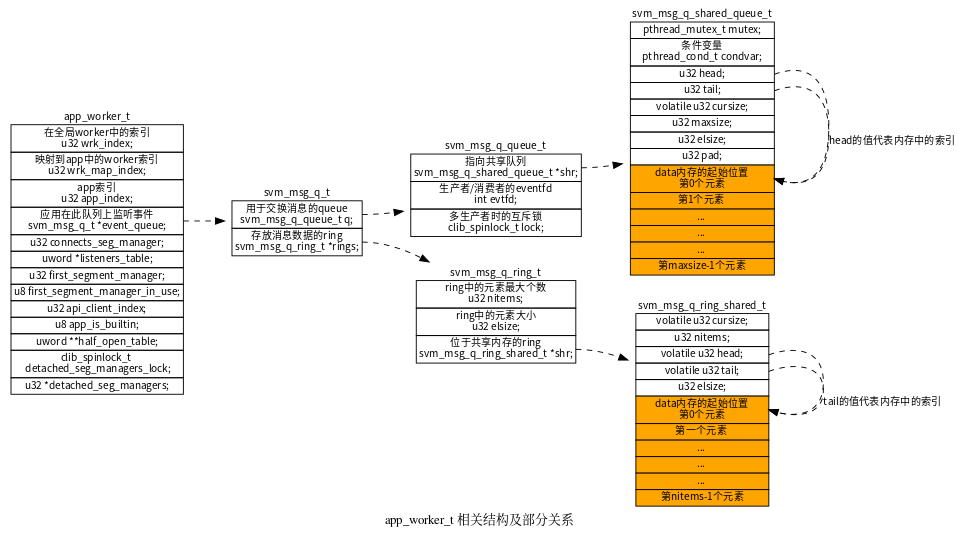
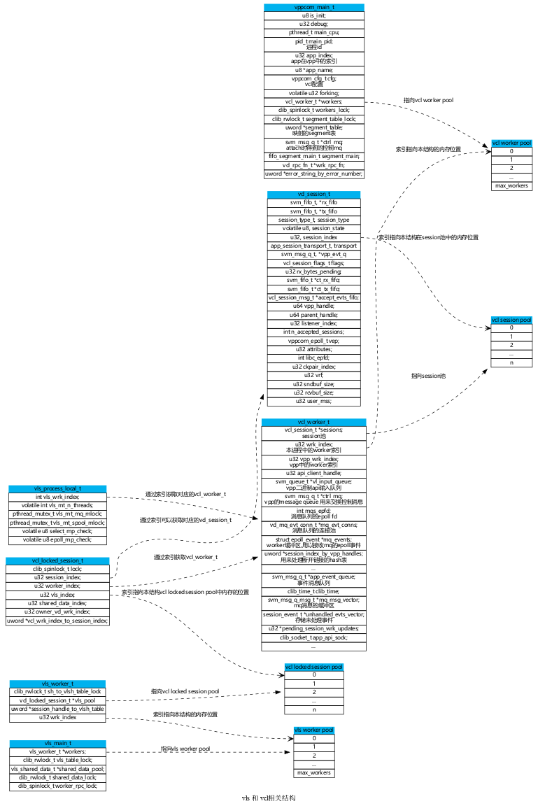
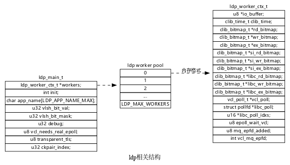
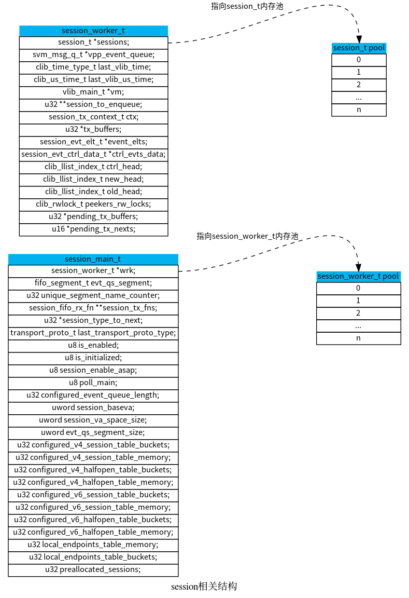
11.2. app注册逻辑
在指定LD_PRELOAD环境变量后， ldp_constructor在main函数之前被执行，然后调用ldp_init进行初始化操作。
11.2.1. ldp_constructor
ldp_constructor
ldp_init
vls_app_create
vppcom_app_create
vppcom_cfg //根据vcl配置文件初始化vcl配置
fifo_segment_main_init
atexit(vppcom_app_exit)
vcl_elog_init
vcl_worker_alloc_and_init //分配vcl_worker_t 并初始化
vcl_api_attach //和VPP关联
pthread_affork(vls_app_pre_fork, vls_app_fork_parent_handler，vls_app_fork_child_handler)
ldp_alloc_workers
"获取环境变量配置相关"
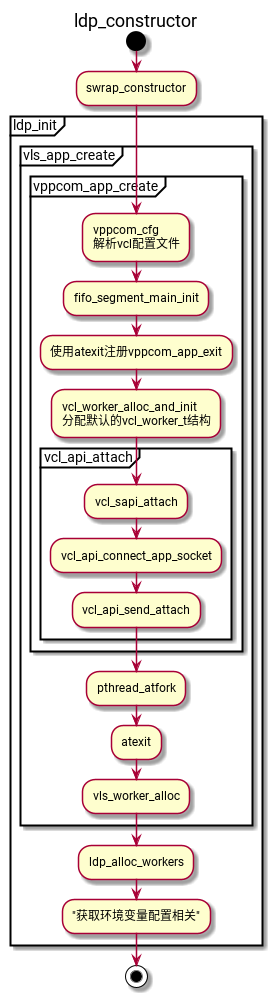
初始化相关的环境变量：
- LDP_ENV_SID_BIT
- 设置可用linux的fd数量
- LDP_ENV_DEBUG
- 设置日志级别
- LDP_ENV_APP_NAME
- app名称
- LDP_ENV_TLS_TRANS
- 使用TLS
- vcl_worker_alloc_and_init
- 此函数主要分配vcl_worker_t结构，判断是否使用epoll事件来通知消息，初始化
mqs_epfd(vcl.conf中的use-mq-eventfd)，初始化mq_msg_vector（消息队列的缓冲区）长度和unhandled_evts_vector（存储未处理的事件缓冲区）长度。
11.2.2. vcl_api_attach
- vcl_sapi_attach
- 使用socket连接到vpp

- vcl_bapi_attach
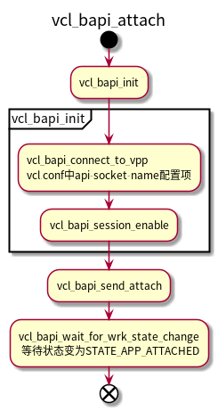
11.3. session queue相关的node
11.4. socket过程
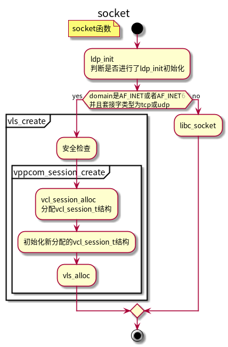
11.5. connect过程
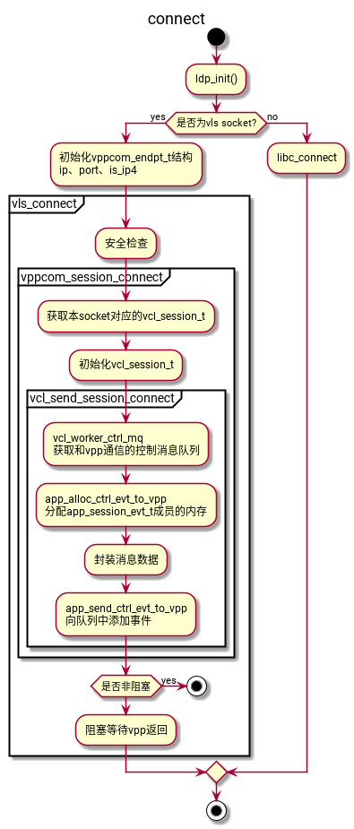
11.6. listen-accept
11.7. 发送数据
11.8. 接受数据
11.9. 协议栈
11.9.1. 连接被动关闭
tcp46-established-inline tcp_rcv_fin tcp_handle_disconnects session_transport_closing_notify vpp attach handle app attach reply handle
11.10. VCL
- vls_create ==> socket
- vls_close
- vls_listen
- vls_connnect
- vls_accept
- vls_read
- vls_recvfrom
- vls_write
- vls_wirte_msg
- vls_sendto
- vls_attr
- vls_epoll_create
- vls_epoll_ctl
- vls_epoll_wait
- vls_selsct
11.11. 通信
基于共享内存的单向队列
ssvm_client_init_memfd fifo_segment_attach vcl_segnemt_attach vcl_session_app_add_segment_handler segment_manager_alloc_session_fifos app_worker_add_segment_notify app_worker_alloc_session_fifos vl_api_send_fd_msg vl_sock_api_send_fd_msg session_send_fds mq_send_add_segment_cb app_worker_add_segment_notify
static session_cb_vft_t session_mq_cb_vft = { .session_accept_callback = mq_send_session_accepted_cb, .session_disconnect_callback = mq_send_session_disconnected_cb, .session_connected_callback = mq_send_session_connected_cb, .session_reset_callback = mq_send_session_reset_cb, .session_migrate_callback = mq_send_session_migrate_cb, .session_cleanup_callback = mq_send_session_cleanup_cb, .add_segment_callback = mq_send_add_segment_cb, .del_segment_callback = mq_send_del_segment_cb, };
static init_fn server_init_fns[SSVM_N_SEGMENT_TYPES] = { ssvm_server_init_shm, ssvm_server_init_memfd, ssvm_server_init_private }; static init_fn client_init_fns[SSVM_N_SEGMENT_TYPES] = { ssvm_client_init_shm, ssvm_client_init_memfd, ssvm_client_init_private }; static delete_fn delete_fns[SSVM_N_SEGMENT_TYPES] = { ssvm_delete_shm, ssvm_delete_memfd, ssvm_delete_private };
11.11.1. eventfd
svm_msg_q_alloc_producer_eventfd
11.11.2. 条件变量
pthread_cond_broadcast(&q.condvar)
11.11.3. 通知函数
svm_queue_send_singnal_inline
12. NODE功能梳理
12.1. 收包类的node
12.1.1. dpdk-input
12.1.2. tuntap-input
12.2. flow-report-process
完成流量上报功能, 可以设置接受流量信息的ip 端口, 发送流量信息的ip